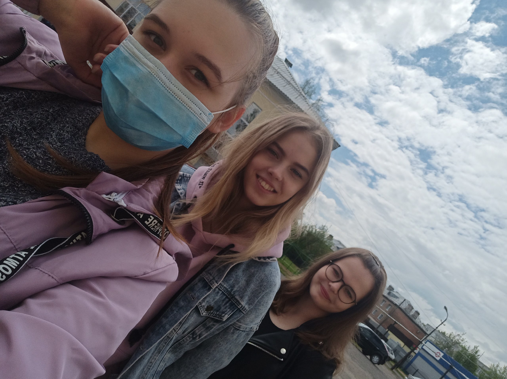

ШКОЛЬНЫЕ ГОДЫ
|
 |
В пятом классе я поступила в художественную школу. Там я училась 5 лет и окончила её на отлично. Это было очень интересное время, каждый день был наполнен творчеством. В 2018 году я решила продолжить учебу после 9 класса и, успешно сдав ОГЭ, поступила в 10 класс. В школе предложили выбрать два профильных предмета. Выбор пал на физику и математику. В это же время, я решила попробовать заняться чем-то новым и записалась в кружок кройки и шитья . Школу окончила в 2020 году. И сейчас я учусь в ВятГУ. |
|
←Назад|
|Продолжение→ |